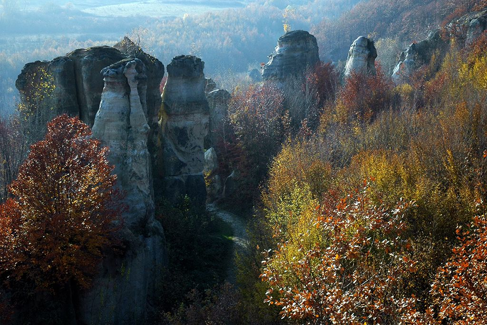

Sárkányok kertje

Szilágy megye egyik leglenyűgözőbb és legvarázslatosabb természeti látványossága a Sárkányok
kertje, amely nevét a legendás sárkányokról és a sziklaalakzatok különleges formáiról
kapta. Ez a földtani rezervátum nemcsak geológusokat és kutatókat, hanem természetkedvelő turistákat is
egyaránt vonz.
A Sárkányok kertje Zsibó városától körülbelül 9 km-re kelet-délkeletre található, Almásgalgó falu határában.
Az odavezető út elején madártávlatból is megcsodálható a táj: a suvadáskaréj (földcsuszamlás által kialakult
forma) pereméről lenyűgöző kilátás nyílik a sziklákra.
A Sárkányok kertje különféle geológiai rétegek váltakozásából jött létre: agyag, homokkő, apró szemű
konglomerátumok (kavicsos kőzetek).Ezek a rétegek eltérő módon reagálnak az erózióra (szél, eső, fagy),
ezért a keményebb anyagokból álló részek lassabban kopnak, mint a puhábbak. Ennek köszönhetően jöttek létre
a tornyok, kúpok, oszlopok, "gombák", valamint ember- és állatformájú alakzatok. A formák folyamatosan
változnak – régebbi feljegyzések 25–30 méteres alakzatokat említettek, manapság azonban már „csak” 10–15
méter magas képződmények találhatók itt. Élettartamuk attól függ, mennyire ellenálló a felső védőrétegük.
A sziklakert fantáziadús elnevezéseket kapott formái közül néhány: Éva, Az Öregember, A baka szeretője, Sárkánnyal, Gyűszűvirág
Ezek nemcsak alakjuk, hanem a hozzájuk fűződő népmesék, legendák miatt is különlegesek.A néphagyomány szerint ezek az alakzatok valaha élőlények voltak, akiket egy átok vagy isteni büntetés
következtében kővé dermesztettek – innen ered a "Sárkányok kertje" elnevezés is. A sziklák sziluettje
valóban emlékeztet sárkányokra, emberekre, és más mitikus lényekre.
Látogatási információk
- A terület természetvédelmi oltalom alatt áll, ezért szabadon látogatható, de kérik a természet megóvását.
- Sétaösvények vezetnek végig a formációk között, és kilátópontok is segítik a táj megcsodálását.
- A legjobb időpont a látogatásra késő tavasztól kora őszig tart, amikor a növényzet is hozzájárul a
varázslatos hangulathoz.